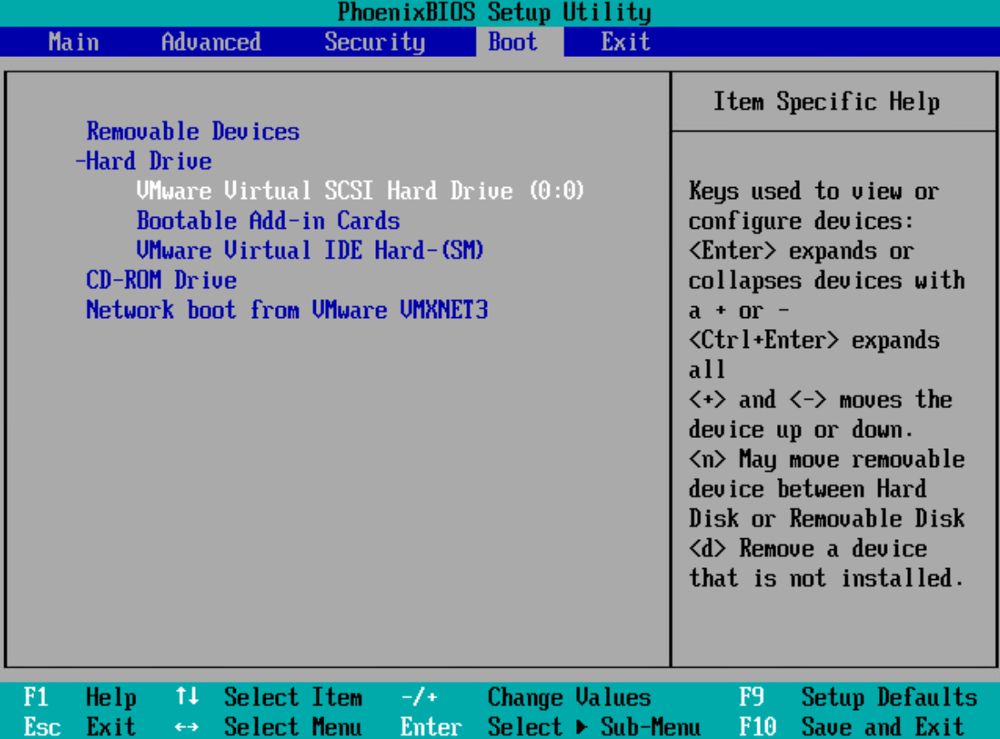

During VMware VM recovery, if Failed to restore the NVRAM file is displayed in the job details on the management page, the OS of the recovered VM may fail to be accessed. This section uses vSphere Client 6.7.0 as an example to describe how to resolve the problem.

- During VMware VM backup, if Failed to back up the NVRAM file is displayed in the job details on the management page, the problem will occur after the copy is used for VM recovery. You are advised not to use the copy for recovery or you can resolve the problem by referring to this section after recovery.
- This section also applies to instant recovery and live mount.
- Enable the system to enter the BIOS setting page the next time when the VM boot screen is displayed.
- Log in to the vCenter Server on a browser.
Login address: https://vCenter Server IP address
- Search for the restored VM based on the VM name.
- Choose ACTIONS > Edit Settings.
- Choose VM Options > Boot Options > Force BIOS setup and select During the next boot, force entry into the BIOS setup screen.
- Click OK.
- Restart the VM.
- Log in to the vCenter Server on a browser.
- In the BIOS, configure the system disk to be scanned first when the VM is started.
Before performing this operation, record the original startup sequence for rollback if necessary.
- On the VM page, click LAUNCH REMOTE CONSOLE to display the BIOS setting page.
- Press ← or → to move the cursor to BooT.

- Press ↑ or ↓ to move the cursor to Hard Drive and press Enter.
- Press ↑ or ↓ to move the cursor to the system disk, and then press Shift++ to move the disk to the first place.
As shown in the following figure, VMware Virtual SCSI Hard Driver (0:0) is the disk where the OS resides. Select the disk based on the actual environment.

- Press F10 to save the configuration and exit.
The OS of the VM is accessed normally.